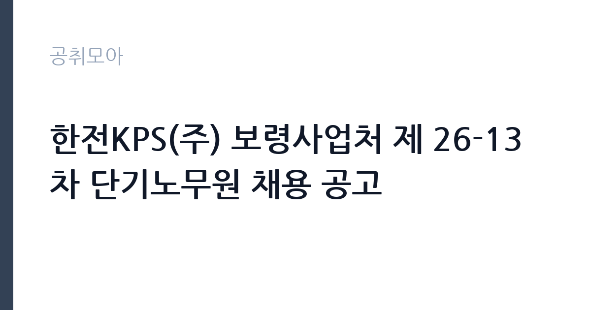

[공공기관] 한전KPS(주) 보령사업처 제 26-13차 단기노무원 채용 공고
한전KPS(주) · 충남 · 마감 2026-10-26 (D-8) · 출처 잡알리오

한눈에 보는 모집 조건
| 기관 | 한전KPS(주) |
|---|---|
| 공고명 | 한전KPS(주) 보령사업처 제 26-13차 단기노무원 채용 공고 |
| 고용형태 | 일용직 |
| 근무지 | 충남 |
| 게시일 | 2026-10-19 |
| 마감일 | 2026-10-26 (D-8) |
지원자격, 이렇게 읽으세요
- 공공기관 채용공시
- 세부 조건은 원문 공고문 확인
응시 자격의 핵심은 두 가지입니다. 채용 예정일 즉시 근무가 가능해야 하고, 엔지니어링산업 진흥법 시행령 제4조가 정한 엔지니어링기술자 자격 요건을 갖춰야 합니다. 이 자격은 관련 학위나 기술자격, 경력으로 인정받는 구조라 본인의 이력이 어디에 해당하는지 확인해야 합니다. 결격사유로는 신체검사 부적격, 채용 서류 허위 기재, 작업 현장 안전수칙 위반으로 퇴출된 이력이 있습니다. 학력과 경력 제한은 두지 않지만, 실제 업무가 발전소 정비 현장 보조이므로 체력과 안전 수칙 준수가 전제됩니다.
이 공고의 포인트
이 공고의 성격을 정확히 이해하는 것이 중요합니다. 단기노무원은 공사 기간에 묶인 계약직으로, 한전KPS가 이전 차수에 낸 공고를 보면 근무 기간이 한두 달에서 길게는 반년 수준이었고 정규직 전환 혜택이 없다고 명시했습니다. 대신 일급제로 급여를 받고 4대보험과 건설근로자퇴직공제, 구내식당 이용이 제공됩니다. 발전소 정비 현장 경력을 쌓으려는 지원자나, 보령 인근에서 단기간 일자리를 찾는 지원자에게 맞는 자리입니다. 보훈대상자와 장애인, 건설업 기초안전교육 이수자, 국민체력100 인증자에게는 가점이 주어집니다.
전형은 어떻게 진행되나
전형은 서류접수, 서류심사, 신체검사, 합격자 발표 순으로 진행됩니다. 이전 차수 공고에서는 서류심사 다음 날 신체검사를 보고 며칠 뒤 합격자를 발표하는 일정이었습니다. 지원서는 지정된 이메일이나 방문으로 접수하며, 입사지원서와 개인정보 동의서를 제출해야 합니다. 블라인드 채용 지침에 따라 지원서에 사진과 학교명, 전공, 주소, 생년월일을 기재할 수 없고, 이메일 주소에 학교명이나 단체명이 드러나도 안 됩니다. 이 규정을 어기면 불이익을 받을 수 있습니다.
원문에서 확인한 전형 방식
- 채용예정일 즉시 근무 가능한 자 - 엔지니어링산업 진흥법 시행령 제4조(엔지니어링기술자)의 자격 요건을 가진자(별첨 1 참조)
이런 분께 추천해요
- 발전소 정비 현장에서 단기간 경력을 쌓으려는 기술자
- 보령 인근에 거주하며 공사 기간에 맞춰 근무할 수 있는 지원자
- 건설업 기초안전교육을 이수해 가점을 받을 수 있는 지원자
지원 전 체크리스트
- 엔지니어링기술자 자격 요건을 충족하는가
- 채용 예정일부터 즉시 근무가 가능한가
- 입사지원서에 학교명·사진 등 블라인드 위반 정보를 넣지 않았는가
- 신체검사 일정에 응할 수 있는가
모집 일정과 제출 타이밍
마감은 2026년 10월 26일이며, 접수 후 서류심사와 신체검사가 빠르게 진행됩니다. 이전 차수 사례를 보면 접수 마감 다음 날 서류심사, 그다음 날부터 신체검사, 이후 합격자 발표가 이어지는 압축 일정이었습니다. 합격 후 근무 시작일은 공사 일정에 맞춰 정해지고, 공사 기간이 변경되면 계약 기간도 함께 조정될 수 있습니다. 일정이 짧기 때문에 신체검사 가능 여부와 근무 시작 가능일을 미리 정해두어야 합니다.
직무 이해하기: 공공기관
단기노무원은 발전소 경상정비 공사의 현장 보조를 담당합니다. 정비 작업에 필요한 자재와 공구를 운반하고, 작업 구역을 정리하며, 안전 시설을 설치합니다. 정비공의 작업을 보조하고 현장 청결을 유지하는 일도 포함됩니다. 보령사업처는 충남 보령의 발전 설비를 정비하는 조직으로, 공사 기간이 정해져 있어 업무 강도가 구간별로 달라집니다. 안전 수칙을 지키지 않으면 즉시 현장에서 퇴출되는 규정이 있으므로, 안전 교육을 성실히 이수하는 태도가 필수입니다.
자기소개서 작성 팁
단기노무원 지원서는 길게 쓸 필요가 없습니다. 자기소개서가 요구되는 경우에는 현장 경험과 안전 수칙 준수 태도를 중심으로 쓰세요. 어떤 현장에서 어떤 작업을 보조했고, 안전 교육을 어떻게 이수했는지를 구체적으로 적으면 됩니다. 블라인드 채용 규정상 출신 학교나 가족관계, 신체 조건은 쓰면 안 되므로 주의하세요. 지원 동기는 공사 기간 동안 성실히 근무하겠다는 의지와 현장 적응력으로 정리하면 충분합니다. 과장된 경력은 신체검사와 서류 확인 과정에서 문제가 될 수 있습니다.
면접 준비 포인트
단기노무원 채용에서 면접은 서류심사로 대체되거나 짧게 진행되는 경우가 많습니다. 질문이 나온다면 현장 작업 경험과 안전 수칙 이해, 근무 가능 기간을 확인하는 수준입니다. 신체검사가 실질적 관문이므로 건강 상태를 미리 점검해 두세요. 작업 현장에서 지시를 따르고 위험 요소를 즉시 보고할 수 있는 태도를 보여주는 것이 중요합니다. 근무 기간이 짧다는 점을 이해하고 있다는 답변이 오히려 신뢰를 줍니다.
급여·근무조건 읽는 법
한전KPS 단기노무원은 일급제로 보수를 지급합니다. 이전 차수 공고문에는 일급과 4대보험, 건설근로자퇴직공제, 구내식당 이용이 근무 조건으로 명시되어 있었습니다. 이번 차수의 일급 금액은 원문 공고문에서 확인해야 하며, 직종과 근무 기간에 따라 달라질 수 있습니다. 계약 기간은 공사 일정에 연동되고, 계약 만료 후 고용관계는 소멸하며 정규직 전환 혜택은 없습니다. 근무는 주 5일, 1일 8시간 기준으로 안내되는 것이 일반적입니다. 단기 계약이라는 조건을 감안해 총소득을 계산한 뒤 지원을 결정하세요.
자주 묻는 질문
- 정규직으로 전환될 수 있나요
아니요. 단기노무원은 공사 기간에 맞춰 채용하는 비정규직이며, 계약 만료 후 정규직 전환 혜택이 없다고 공고에 명시되어 있습니다. - 학력이나 경력 제한이 있나요
학력과 경력 제한은 두지 않지만, 엔지니어링기술자 자격 요건을 충족해야 합니다. 세부 기준은 원문 공고문의 별첨을 확인하세요. - 우대사항은 무엇인가요
보훈대상자, 장애인, 건설업 기초안전교육 이수자, 국민체력100 인증자에게 전형 단계별 가점이 주어집니다. 가점은 증빙서류로 입증해야 합니다.
함께 보면 좋은 공고
[공공기관] '2026 장애인선수 현장밀착형 스포츠과학지원사업' 분석연구원(가급) 채용 공고 — 마감 2026-11-02[공공기관] 한국토지주택공사 서울지역본부 기간제근로자(매입행정역, 매입기술역, 공사원가검토역, 매입변호사, 매입감정평가사) 채용공고 — 마감 2026-11-02[공공기관] (보훈 및 장애인 제한경쟁) 육아휴직자 대체 시간선택제 일자리 채용 — 마감 2026-11-02출처: 잡알리오 공개정보를 바탕으로 공취모아가 정리한 안내글입니다. 모집 조건·일정은 변경될 수 있으니 지원 전 반드시 원문 공고문을 확인하세요. 본 글은 정보 제공용이며 합격을 보장하지 않습니다.